Article # 78
What is erosion, and how does it affect Arkansas?


A7: Tornadoes
“The Most Ferocious Storm”
By Reggie Credit, Sandy Pershall, Brandon Barber,
Samantha Godkin (TheTrucelent Tornadics)
Principles of Geography: Geog 1305, Section 2619
Prepared March 5, 2001
How tornadoes are formed and why are some places more prone to tornadoes than others?
A phenomenon that captures the attention and respect of millions of Americans is known as a tornado. Although they have been studied worldwide for many years, they
still leave us guessing about when they will visit next, who they will visit and what degree of destruction they will leave in their awesome path. While most of us are amazed at the grandeur, beauty, and power of tornadoes (as seen in the picture below), many fear the mere thought of being caught up in its grip.
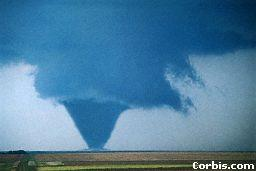
Source: Yahoo Picture Gallery http://search.gallery.yahoo.com/search/corbis_id?p=cid%3A11409415§
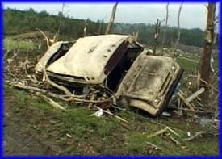FORMATION OF TORNADOES
Twisters, dust devils, whirlwinds,
waterspouts, cyclones--tornadoes go by
different names. But whatever they are
called the roaring winds of a tornado
can toss a truck high into he air (photo
right), smash buildings and snap the
trunk of a tree like a matchstick. Source: Photo Gallery © 1998, Storm Productions, Inc.
http://www.stormproductionsinc.com/gallery5.htm
A Tornado funnel looks like a huge
elephant’s trunk hanging down from a cloud. (Photo below). The funnel acts like a
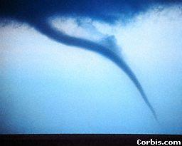giant vacuum--whenever the cloud touches
the ground it sucks things up into the air.
Tornadoes have been reported in every state
of the United States and in every season.
Source: Yahoo Picture Gallery HYPERLINK http://search.gallery.yahoo.com/corbis_id?p=cid%3A11409415 http://search.gallery.yahoo.com/search/corbis_id?p=cid%3A11409415
However, they occur most often in the eastern two-thirds of the country during the spring, which is sometimes called tornado
season. A tornado is a powerfully twisting column of air that makes contact with the ground. It is visible when it contains water droplets in the form of a cloud, or surface dust and debris, or even a mixture of both.
The birth of a tornado usually has its origin in a thunderstorm. This type of storm
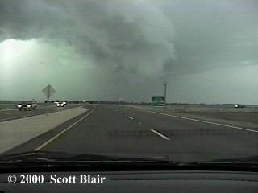begins when warm humid air rises upward from the ground. As these updrafts cool into the upper atmosphere, the moisture in them forms clouds. The water droplets in the clouds grow bigger as water vapor around them condenses or becomes liquid. The droplets begin to fall, creating downdrafts, and these downdrafts meet new updrafts, which continue feeding warm humid air into the spreading thunderhead, cloud. This is the most violent time in a thunderstorm. A tornado may form at the edge of an updraft, where it meets a downdraft. The updraft pulls air away from the ground, which creates an area of low pressure. More air rushes in to take the place of air that’s been pulled up. Then the falling water droplets in the downdraft get swept in and begin to form a tornado’s funnel shaped cloud. (Photo below)
Source: The Photo Gallery © 1999 Scott Blair
http://www.geocities.com/CapeCanaveral/hangar/3946/photo.html
Tornadoes are most common between April and June. And they are most likely to
occur in an area known as tornado alley, which runs from central Texas as far north as
Illinois and Indiana and as far east as Kentucky.
In addition, the Rocky Mountains have higher and drier elevations, which allow a hot dry layer of air to blow from the southwest, above the ground, at about 3,000 feet. Cooler air races over the region at about 10,000 feet. An USA TODAY online graphic (shown on the map) shows how these wind flows stack up over the center of the nation, creating low and mid level wind shear. (http://www.usatoday.com/weather/wtorally.htm)
Source:
USA TODAY research by Chad Palmer (USA TODAY Weather- How caps form
6/23/99) HYPERLINK http://www.usatoday.com/waether/wcapform.html
http://www.usatoday.com/waether/wcapform.html
Hot dry winds mix down to the ground and sometimes butts against the humid air of the Gulf. Severe storm developments with colliding winds that form a dry line are often triggered. Warm and cool air is also an unstable condition. Low level warm moist air acts as a cap. For a storm to grow out of rising air, it needs to break through the cap. Near the ground strong heating areas are able to penetrate the cap. The bottled up, low-level moist air acts as if it was a bathtub drain pointing toward the sky. Storms rapidly become severe and tornadic due to the upper-level jet stream, the breaking through of the cap and the exploding convection. It is a combination of large moisture supply, a drying and cooling middle atmosphere, low level wind shear, the special features of a connective cap and a dry-line that turn the Central US into tornado alley. (USA TODAY Weather 8/11/99 – Tornado Alley Breeding ground for violent tornadoes)
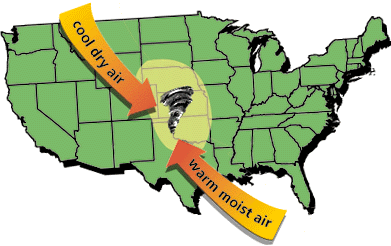 The American
Meteorology Society’s
Glossary of Weather and
Climate defines Tornado
Alley as: “The area of the
United States in which
Source: Tornadoes –The Most Ferocious Storm
HYPERLINK http://whyfiles.org/013tornado/tornado_main1.html
http://whyfiles.org/013tornado/tornado_main1.html
(Tornado Alley Breeding).
The Mississippi, Ohio, and lower Missouri River valleys encompasses the lowland of “Tornado Alley”. The northern and southern borders of tornado alley extend from Nebraska, Iowa, and central Texas. (as seen in the map above) Most monster mile-wide tornadoes spin from this region. Although no state is entirely free of tornadoes, the Appalachians, Rocky Mountains, and the Plains are most frequent. As cold, dry air moves from Canada and warm, humid air comes from the Gulf of Mexico they meet in the middle of the U.S., called Tornado Alley. When warm air gets moist it starts to form a thunderstorm. As the two
kinds of air mix together, they
start to form a circular shape,
HYPERLINK
http://www.weather.com/newscenter/specialreports/tornado/dwindows/causes/about_causes.html
http://www.weather.com/newscenter/specialreports/tornado/dwindows/causes/about_causes.html
Source: What causes tornadoes?
right)
When the air blows it pushes the slinky form horizontally, up and down, into a tornado.
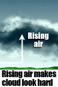Furthermore, rotating thunderstorms are called supercells. A supercell is a rotating thunderstorm responsible for
producing the strongest tornadoes, other
dangerous winds and large hail. Parts
of the clouds are turning as air rises,
(seen at right) which give the appearance
of a corkscrew. (seen below)
Sources: USA TODAY Weather 3/16/00 –National Weather Service “Advanced Spotters Field Guide”
http://www.usatoday.com/weather/wtsm2.htm
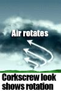
Sources: USA TODAY Weather 3/16/00 –
National Weather Service “Advanced Spotters Field Guide” http://www.usatoday.com/weather/wtsm2.htm
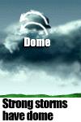The column of rising air, a cloud or
dome (seen at right) called “overshooting” top,
forms with a hard look. Air rising at speeds of
170 mph gives them a hard cauliflower look as
well. Large tornadoes usually drop from the
supercell at the edge of the rain-free area under
the storm. (see below) Sources: USA TODAY Weather 3/16/00 –
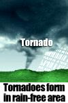National Weather Service “Advanced Spotters Field Guide” http://www.usatoday.com/weather/wtsm2.htm
The Millions of ice crystals and water droplets that we see as a cloud hides much of the action going on inside a supercell, and the clouds help show what’s happening inside by its appearance. (USA Today
Weather 3/16/00 – Supercells have unique characteristics)
The picture below is a Supercell cloud. It shows the characteristics of the strongest storm from which tornadoes form. Also, notice this is the type of cloud we see that hides the action going on inside a supercell storm.
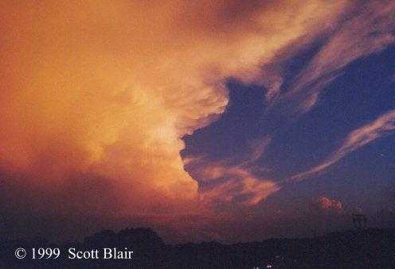
(Need Source)
Source: The Photo Gallery © 1999 Scott Blair
HYPERLINK http://geocities.com/CapeCanaveral/Hangar/3946/phots.html
http://geocities.com/CapeCanaveral/Hangar/3946/phots.html
TORNADO SCIENCE
Tornadoes are measured on a scale from F0 to F5 on a scale called the Fujita Wind Damage Scale. All tornadoes, ranging from weakest to smallest, are measured by the wind speed it carries while on the ground. They can reach anywhere from 72mph to 300 mph while on the ground. Many people know that there is a cold front crossing a warm front, there is a good chance that there will be a tornado. Many people do not know the types of tornadoes and what kind of damage they cause. There are various types of tornadoes. They are measured on scale from F0 to F5, on a scale called the Fujita Damage Scale (below).
FUJITA WIND DAMAGE SCALE
F0 is the lightest tornado, which stays on the ground for the shortest time, and causes the least damage. The FO is considered a light tornado. The second tornado is an F1, which is stronger that an F0. They grade this tornado as a tornado as a moderate tornado. The next tornado is graded as a considerable tornado called an F2, which is stronger that both the F0 and F1. The next strongest tornado is called an F3, which is related to as a severe tornado. The second to strongest tornado is a devastating tornado. This tornado is related as an F4 on the Fujita Damage Scale. The next tornado is the strongest and most dangerous tornado there can be. There are hardly any that amount to this big. It is called F5, which is considered as an incredible tornado. All these tornadoes ranging from weakest to strongest are all measured on the wind speed it carries while on the ground. They can reach anywhere from 72mph to 300mph while on the ground.
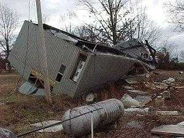 The tornadoes ranging from
light to incredible are measured by the
amount of damage the tornado causes.
The damage that the tornado causes is
called debris. The F0, which is the light
tornado, can cause damage to chimneys;
Source: HYPERLINK
http://www.srh.noaa.gov/ftproot/lzk/html/track1.html
www.srh.noaa.gov/ftproot/lzk/html/track1.html
shallow-rooted trees, and damage sign
boards. (see photo above right) The wind power ranges from 40 to 72mph. The F1, which is called the moderate tornado, can peel the surface off roofs, cause a mobile home to be pushed off its foundation. Attached garages might be destroyed and automobiles pushed off the road. The wind power ranges from 73 to 112mph. The F1 wind is considered as the lower wind power of a hurricane. The F2, which is called a
Source: HYPERLINK http://www.weather.com/newscenter/specialreport/tornado/awesome/miricles.html www.weather.com/newscenter/specialreport/tornado/awesome/miricles.html
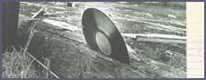considerable tornado, can tear roofs off the frames of houses, demolish mobile homes, push boxcars over, snap or uproot large trees, and generate missiles from light objects. (see photo left) The wind range
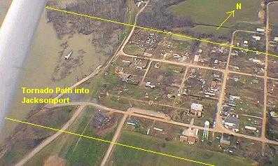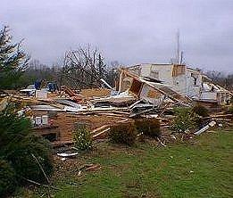 is from 113 to 157mph. The F3, which is called the severe tornado, can tear roofs and some walls off of well-constructed houses, overturn trains, and uproot most trees. The wind power of a F3 ranges from 158 to 206mph. The F4, which is called the devastating tornado, will destroy well-constructed houses. Houses with weak foundations can be blown for some distance, cars can be thrown, and large missiles generated. The wind power of the F4 ranges from 207 to 260mph. The F5, which is the strongest tornado, can lift strong-framed houses off the ground and throw them long distances. It can also send automobiles flying through the air like missiles up to 100 meters. It can also cause trees to be debarked, and concrete to be severely damaged. (see photos below)
Arkansas
Tornadoes on March 1st, 1997 caused a variety of
destruction, ranging from F1 to F4 Source:
HYPERLINK http://srh.noaa.gov/ftproot/lzk/html/track5.htm
http://srh.noaa.gov/ftproot/lzk/html/track5.htm
(Right)
HYPERLINK http://srh.noaa.gov/ftproot/lzk/html/track1.htm
http://srh.noaa.gov/ftproot/lzk/html/track1.htm
(Left)
The tornadoes from F0 to F1 are considered weak, F2 to F3 are strong and F4 to F5 are violent.
All tornadoes are dangerous and can cause severe damage. All tornadoes are also very deadly and if you’re not careful will catch you in its path.
ARKANSAS TORNADOES
Oklahoma is in the center of Tornado Alley. Some parts of Oklahoma have at least 26 tornadoes a year. Tornadoes may form anywhere east of the Rocky Mountains. If you look at the map below, it shows the route of Tornado Alley. As you can see, Arkansas is on the edge of the alley. More than 75% of the tornadoes in the U.S. happen in Tornado Alley.
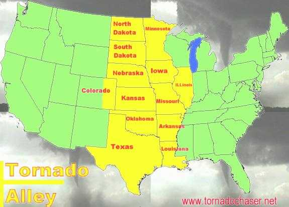
Source: Where is Tornado Alley?
HYPERLINK http://www.tornado_chaser.tripod.com/tornalley.html
www.tornado_chaser.tripod.com/tornalley.html
The longest tornado in Arkansas history was on March 21, 1952, when it traveled from Dierks, AR, to Judsonia, AR, 250 miles. That same day was also "the worst killer storms in the state’s history."(Skiles and Jennings). Three tornadoes killed 111 people and injured 772. About 56 percent of all tornadoes move southwest to northeast, and about 64 percent of Arkansas’s moves in the same direction. During 1950 to 1980, 611 tornadoes hit Arkansas, and over half were in March, April, and May. A large number of tornadoes take place in the afternoon and evening, due to the sunset and temperature change.
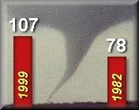A tornado can form anywhere in the United States, as long as it has a lot of characteristics found in a thunderstorm. They involve warm, moist air near the ground, cold air above the warm, and winds that speed up and change direction (Cappella). At the web site www.stormvideo.com/tornado.html you can see videos and footage of tornadoes in Tornado Alley. There is more damage from tornadoes in the Southwest and mid West because there are more mobile homes and not a lot of houses with basements. Since the mix of cold and warm air is what causes a tornado, Arkansas is one of the best places to have one. In the spring, the temperature is always mixed up, one moment it’s nice and cool then the next it’s hot as anything else. This mixing is what causes tornadoes in Arkansas.
The number of tornadoes in Arkansas have
been on the rise in recent years. Prior to the 1999
season, the most tornadoes in one year was 78 in
Source:
HYPERLINK http://www.srh.noaa.gov/ftproot/lzk/html/torhistory.htm
www.srh.noaa.gov/ftproot/lzk/html/torhistory.htm
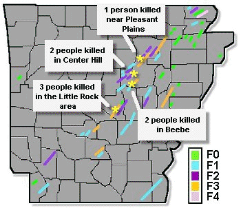in 1999. (see right)
January 21, 1999 managed to
Source: Making Tornado History in 1999
HYPERLINK http://srh.noaa.gov/ftproot/lzk/html/torhistory.htm http://srh.noaa.gov/ftproot/lzk/html/torhistory.htm
produce an unbelievable total of 56 tornadoes, most of which made their way across the state in an 8-hour period. (see diagram left) Only 8 people lost their lives.
WORK CITED
Brown, Billye Walker and Walter R. Brown. Historical Catastrophes: Hurricanes & Tornadoes. Addison-Wesley Publishing Co. 1972.
Jennings, Bringle and Newton K. Skiles. Tornadoes in Arkansas. Cooperative extension service, University of Ark., US Dept. of Agriculture, and County Governments Cooperating.
Cappella, Chris. Western states see few tornadoes, but aren’t immune. August 12, 1999.
www.usatoday.com/weather/wtorwest.htm§
About Tornado Alley.
http://kidscience.about.com/kids/kidscience/blalley.htm§
Southeast tornadoes are nation’s deadliest. March 14, 2000. www.usatoday.org/weather/tornado/wtordead.htm§.
YahooPictureGallery
(http://search.gallery.yahoo.com/search/corbis_i§d?p=cid%3A11409415)
Photo gallery © 1998, StormProductions, Inc.
(http://www.stormproductionsinc.com/gallery5.htm§)
The Photo Gallery © 1999 Scott Blair
(http://www.geocities.com/CapeCanaveral/hanger/3946/photo.html§
Tornadoes-The Most Ferocious Storm
(http://whyfiles.org/013tornado/tornado_main1.html§)
USA TODAY Weather 3-16-00 National Weather Service “Advanced spotters
Field Guide”
(http://www.usatoday.com/waether/wtsm2.htm§)
The Photo Gallery © 1999 Scott Blair
(http://geocities.com/CapeCanaveral/Hangar/3946/phots.html§)
USA TODAY research by Chad Palmer (USA today Weather-How caps form 6-23-99)
(http://www.usatoday.com/weather/wcapform.html§)
USA TODAY online graphic
(http://www.usatoday.com/weather/wtorally.html§)
Tornado Fact Sheet-all about tornadoes
(http://www.nws.noaa.gov/om/torn.htm§)
USA TODAY Weather
(http://usatoday.com/weather/wtujidet.htm§)
Tornado Science
(http://tornadothewebpage.terrashare.com/sactes.html§)
Weather.com – What causes a tornado (http://www.weather.com/newscenter/specialreports/tornadoe/dwindows/cause/about_causes.html§
Seymour, Simon. Tornadoes. Morrow book co. 1999
Making Tornado History in 1999
(www.srh.noaa.gov/ftproot/l2k/html/torhistory.htm§)
Making Tornado History in 1999
(www.sch.noaa.gov.ftproot/lek/html/track1.html§)
Awesome Miracles
(www.weather.com/newcenter/specialreport/tornado/awesome/miricles.html§)
Tornado Track 1 & 5
(www.sch.noaa.govflproot/l2k/html/track5.html§)
(www.sch.noaa.gov,ftproot/lek/html/track1.html§)
Where is Tornado Alley?
(www.tornado_chaser.tripod.com/tornalley.html§)